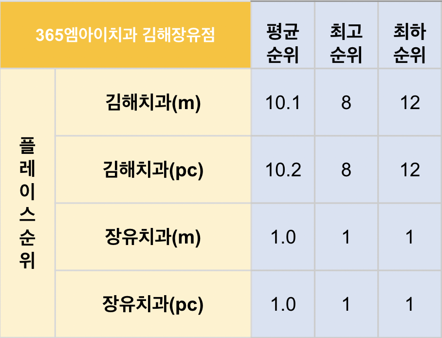
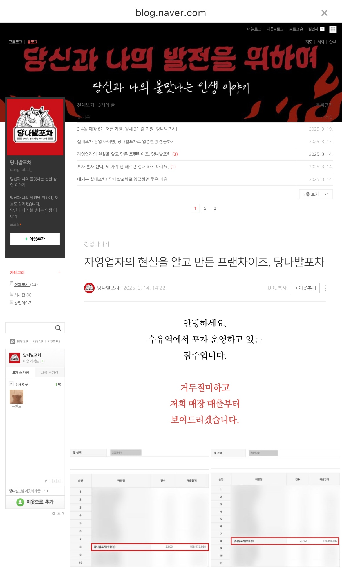

Archive.
공개 가능한 실제 운영 화면을 중심으로, 실무자로서의 문제 해결 과정과 실행 범위를 정리했습니다.


치과 플레이스 노출 관리 &
키워드 순위 점검
지역 검색 환경에서 고객사가 어떤 위치와 키워드로 노출되는지 확인하고, 플레이스 순위와 지도 노출 상태를 기준으로 개선 우선순위를 정리했습니다. 단순 업로드가 아니라 검색 결과에서 보이는 방식까지 점검했습니다.

해외 신규 브랜드 런칭 &
세일즈 인프라 구축
이탈리아 올리브오일 브랜드의 국내 도입 초기 전략을 기획했습니다. 시장 분석을 바탕으로 타겟 페르소나를 설정하고, 제품의 본질을 담은 상세페이지 제작 및 스마트스토어 개설을 주도하여 성공적인 런칭 기반을 다졌습니다.


제품 메시지 정리 &
커머스 접점 최적화
여성 헬스케어 제품의 핵심 메시지를 고객 관점에서 정리하고, 상세페이지와 스토어 노출 흐름을 점검했습니다. 카피라이팅 A/B 테스트와 상품 정보 구조화를 통해 클릭 이후의 이해도를 높이는 방향으로 운영했습니다.


브랜드 블로그와 커뮤니티
콘텐츠 접점 운영
브랜드 블로그와 카페형 커뮤니티 매체에서 사용자가 실제로 마주하는 화면 구조를 기준으로 콘텐츠를 기획했습니다. 게시판, 배너, 본문 흐름을 확인하며 정보가 자연스럽게 읽히는 접점을 만들었습니다.